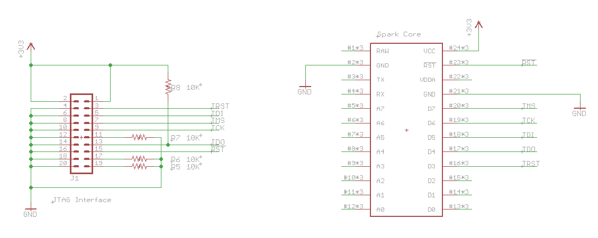
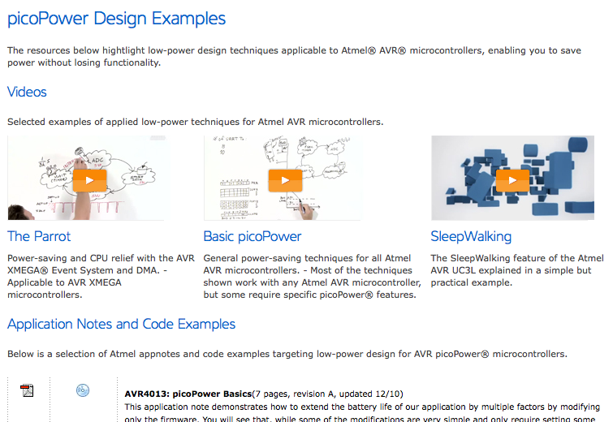

Table of Contents
General Tips
- When attempting to do a project microcontroller-related, look up “Arduino ——” for better-explained versions that aren't too technical, and look for “AVR ——” or “ARM ——” for fully-featured solutions with more technical explanations.
- Usually a certain chip can do a lot, it's just a matter of implementing it! XBee does ADC!
- Get a debugger for Arduino. https://platformio.org/
- Great Starter Links for implementations by Labitat.
- General tips by Jack Ganssle
- Screen is a good Linux / OS X command line program for logging serial. Screen Commands
screen /dev/tty.usbserial-A400gw05 115200 >> output.txt //Ctrl-A then Ctrl-K then y and <Enter> exits
Arduino dumb stuff
Turn on warnings for arduino! It'll catch dumb compiler stuff like this:
unsigned long a = 500 * 1000; // ~30000 unsigned long a = (unsigned long) 500 * 1000; // 500000
Also default value for int is 2^16
Arduino setup
| Name | Board | Programmer | Notes |
|---|---|---|---|
| Pro Trinket | Pro Trinket 5V 16MHz | USBtinyISP | Need to install Adafruit driver for Windows |
| Arduino Mini Clone (CH340) | Arduino Duemolinovae | AVRISP mkII | Need to install CH340 drivers for Windows |
| Wemos D1 Mini | LOLIN WEMOS D1 R2 & Mini | AVRISP mkII | I think CH340 drivers too |
Projects
Cheap arduino clones at Banggood. Probably don't want an attiny as there's not a lot of flash/ram space. .50 more and a little more real estate to use something more, 328p for example.
Don't need it right now as I have other similar boards available that I can use up. But for future projects…
Bought FTDI header. Cheap.
Buck converter
Cheap at banggood. Can get 3a input and buck/boost for dollars.
Lots of good tips in this flashlight led recharge li ion project video. Maybe need a fuse though 
YouTube Link! https://www.youtube.com/watch?v=0CnhTuoTY2M
Also spot welder with old microwave, maybe batteries.
Simulation
It might be helpful to have a simulator running your chip. For example, if you want to give funky inputs but don't have an extra scope lying around. Ehhh…most people want to test on the hardware itself.
Spark Core Stuff
- To build for CORE, slightly different at end for photon. See mdma post
> git clone https://github.com/spark/firmware > git checkout latest //(not develop) > cd firmware/user/applications/ firmware/user/applications> ln -s ~/Dropbox/eng/projects/homerot/spark/homerot/src/ homerot firmware/user/applications> cd ../../main firmware/main> sudo make clean all PLATFORM=core APP=homerot program-dfu
- Really spotty Serial? Disable Spark cloud syncing by using SYSTEM_MODE to turn it off. But, you'll need to flash locally (which you'll prefer anyways)
- Can't get WiFi to connect out of the box? Install the Spark Command Line Interface then apply the CC3000 patch
- Can't get WiFi to turn off then on? Don't hammer the WiFi chip with connect() calls. Let it tell you when it's ready.
SYSTEM_MODE(MANUAL); bool WiFiEnabled = 0; void loop() { if (ConnectToWifiNow == 1 && WiFiEnabled == 0) { WiFi.connect(); WiFiEnabled = 1; } //Wait until WiFi is ready if (WiFi.ready() == 1) { //Do sync stuff DoSyncStuff(); //Then WiFi.disconnect(); WiFiEnabled = 0; } }
- Want to sync your RTC? You can't simply run
Spark.syncTime(), you have to do Spark.connect() and Spark.process() as below.
bool SparkConnect = 1; if (WiFi.ready() == 1 && SparkConnect == 0) { Spark.connect(); SparkConnect = 1; } if (WiFi.ready() == 1 && Spark.connected() && Time.now() < 1000000) { Spark.process(); //Spark.syncTime(); Serial.println("Syncing time"); } if (WiFi.ready() == 1 && Spark.connected() && Time.now() > 100000) { Spark.disconnect(); WiFi.disconnect(); WiFiConnect = 0; SparkConnect = 0; }
- Weird bugs in compiling like `__dso_handle' isn't defined and “undefined reference to operator(void)”? Make sure your backup file names end with something other than .cpp >.<
Debugging
JTAG Hardware
I am using a Bus Pirate for debugging because I have it lying around. Bus Pirate pinout,Spark core Pinout (make sure TDO (D4 on Core)is pulled up with 10K resistor!) 
{kind=link}
Additionally, if your wifi isn't working (optionally, you hear a high-pitched whining from the board), plug in your USB serial cable as you don't have enough power!. It provides the >200mA of current needed for the WiFi chip plus your normal serial connection.
Software
Build your code using make (as normal), but add JTAG and debug flag support:
make clean //Erase your normal (non-debug) build USE_SWD_JTAG=y DEBUG_BUILD=y make //Rebuild with debug flags
Set some stuff for OpenOCD:
- mybuspirate.cfg
source [find interface/buspirate.cfg] #Set serial port buspirate_port /dev/ttyUSB0 # Not really used buspirate_vreg 0 #turn on voltage regulator buspirate_mode normal #or open-drain buspirate_pullup 1
- sparkcore.cfg
# This is a SPARK-CORE board with a single STM32F103MD chip. source [find target/stm32f1x.cfg] # use hardware reset, connect under reset reset_config srst_only srst_nogate
Start up OpenOCD server
> sudo openocd -f mybuspirate.cfg -f sparkcore.cfg
Open up a Telnet connection to OpenOCD to reset the chip if needed. (soft_reset_halt seems to work better than reset halt)
> telnet localhost 4444 telnet> soft_reset_halt
GDB
To run, do arm-none-eabi-gdb -x jtag.gdb -tui, then <Ctrl>+x 2 which enables assembly and code view mode. <Ctrl>+x o switches the views. More info here
- jtag.gdb
target remote localhost:3333 file core-firmware.elf set remotetimeout 2000
Local Builds
<project-dir> > sudo ../sparky make
To distinguish between the normal spark commands and Spark-Util commands, I've made a local executable of spark-util and called it sparky
Follow Spark-Util instructions for doing multiple projects at once. However, I think you need to reset in between changing projects, which wipes out your build.mk file, so be sure to have a backup.
- However, for including libraries, follow the flashee eeprom library instructions
Added -std=gnu++11 to CFLAGS += in spark/core-firmware/build/Makefile, now static asserts work!
Splitting Up Files
Can't put header and implementation in the same file for some reason. It's saying there's multiple definitions :/
Arduino Stuff
Include a separate library inside of your C++ and H files? It still doesn't work… >.<
Boring but useful tools
Compression
- NerdKits Huffman Coding
Power Optimization
- Great videos of using AVR's picoPower (and source docs): 
- Examples from JeeLabs on practical implementations with current measurements. (gets into resetting based on Watchdog Timer to save more power! Linked at bottom of page)
General Tips
- Allow custom file endings (Arduino's pde) to be mapped in text editors (textmate for now). link
- How to use MOSFET's: YouTube Link! https://www.youtube.com/watch?v=Te5YYVZiOKs
- What PWM does: YouTube Link! https://www.youtube.com/watch?v=YmPziPfaByw
Using μC as USB Slave Input (Human Interface Device)
- USB Business Card uses VUSB on an ATTiny?! Wow…
{kind=link}
- Teensy w/ SD Card as USB Drive! (300 KB/s transfer rate though…)
In Hardware
- Can do Keyboard, Mouse, MIDI, Audio, bunch of stuff using LUFA framework
- Adafruit
- Their Teensy+ board had some additional perks (mostly safety)
- PJRC (original creator of Teensy)
- Great Teensy Example Projects. Includes MIDI output, fast and simple RCA output, and much more!
In Software
- V-USB. More to come soon…
Not sure how much easier hardware method using LUFA is compared to software V-USB. Will be finding out soon.
ARM Development
STM32
- STM32 Development (C compilation). Step-By-Step Introduction by Geoffrey
- LeafLabs Delivers Maple microprocessors, similar to Arduino in coding. Might be a performance hit, but likely not. Should look at for future projects!!!
- (1/7/11)opensourcearm.pdf Long tutorial on using Eclipse and other Open Source tools for C & ARM development. Might be useful someday?
Long-Term Questions
- How do you burn a bootloader to allow easy USB programming? What difference is there between avrdude, LUFA, and Arduino bootloaders?